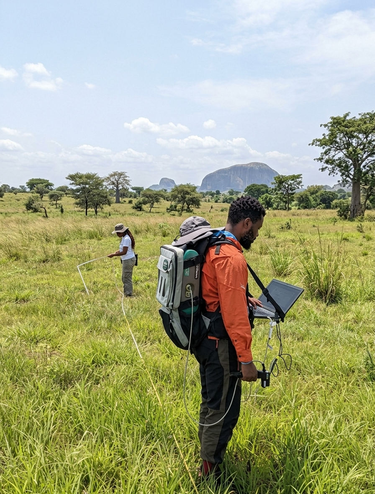
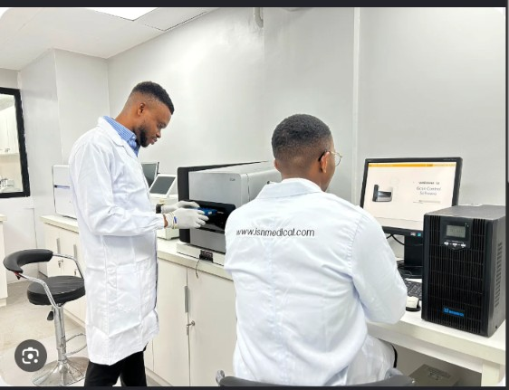

A team of postgraduate researchers helping students and organizations across Nigeria get serious academic research done properly.
What began as informal help for friends during a Masters programme grew through referrals into something bigger. Word travelled, requests started coming in from outside one field of study, and it became clear that doing this properly meant bringing in other credible researchers rather than trying to cover every subject alone.
That is how the team came together: researchers across different fields, all based in and around Nigerian universities, all committed to the same standard. What started informally became ZeroFluke Research Assistant's formal launch this year.

Research is one of the foundations of an academic certificate, and that pressure is not limited to one school or one region. Across much of Nigeria, students are stretched thin between coursework, research demands, and simply getting by. Many never get the uninterrupted time real research requires.
That gap is what ZeroFluke Research Assistant exists to close: structured, dependable research help so students can understand the process, get proper literature reviews and findings done, and move forward with work that holds up to scrutiny.
A team of 12 researchers for whom this is a full-time occupation, not a side gig. Every member holds at least a Masters degree; several are completing their PhDs.
Requests are matched to the right researcher by field, so a science-based thesis and a humanities dissertation are never handled by the same generalist approach.
The team has also been contracted directly by organizations for research work, not just individual students preparing academic submissions.

Every order starts with a minimum number of revision rounds, because that roughly matches how many times a supervisor actually reviews a piece of work before accepting it. It's part of the process, not an extra charge waiting to happen.
We don't take on ordinary assignments. If it isn't research grade work, a project, thesis, or publishable article, it isn't a fit here. That's a deliberate choice, not a limitation.
Fieldwork, lab reagents, and equipment costs for science-based research are quoted separately, never folded into a flat fee that doesn't reflect what the work actually requires.